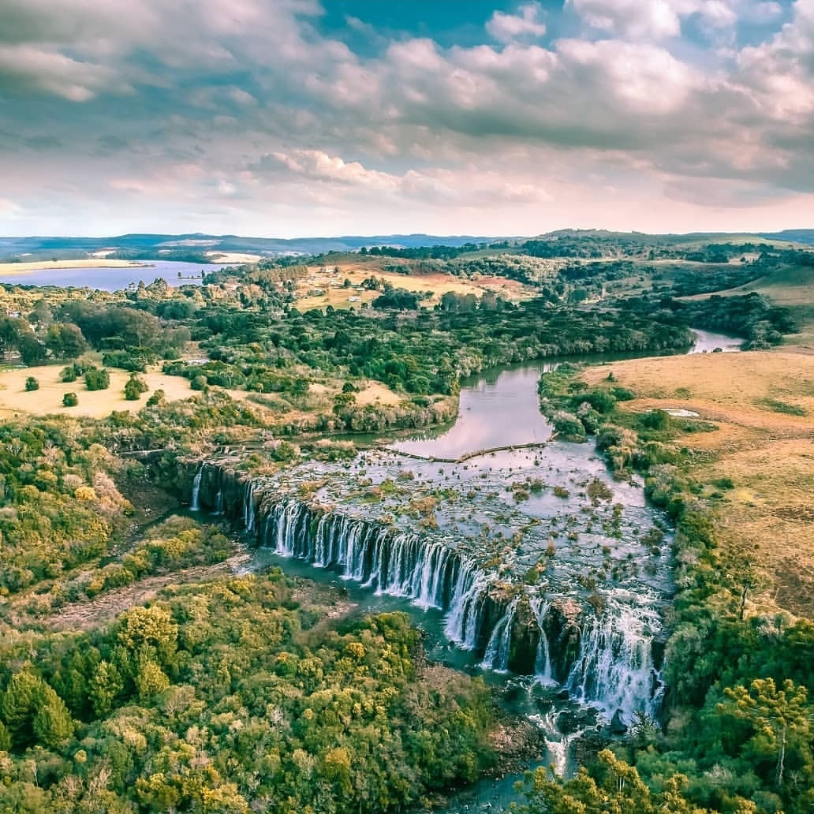
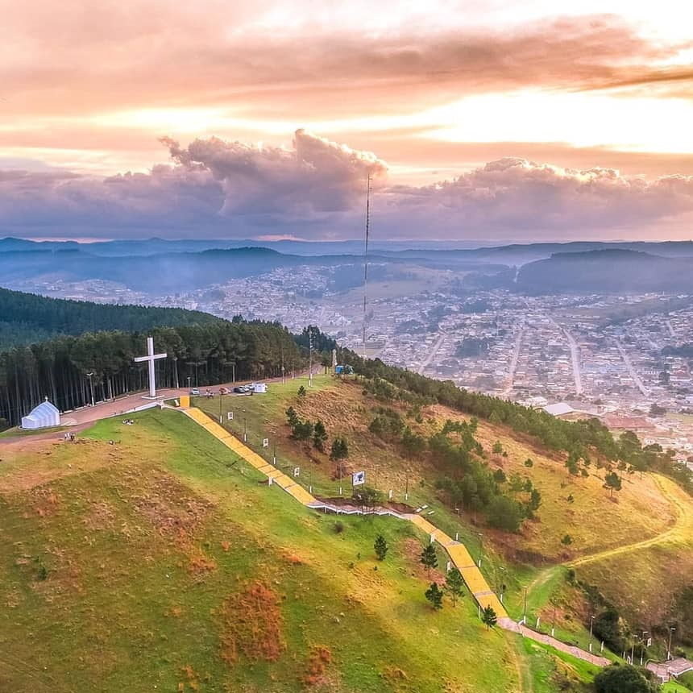
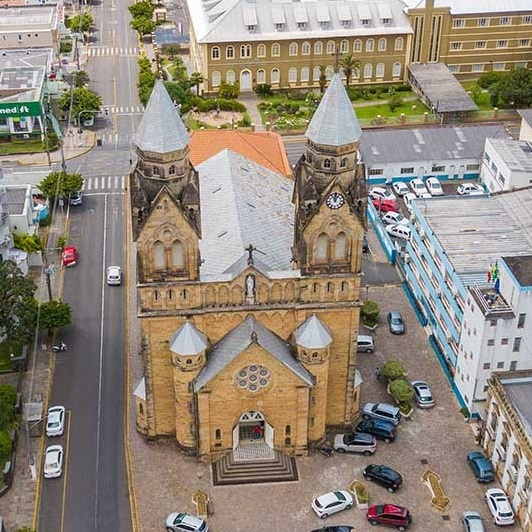
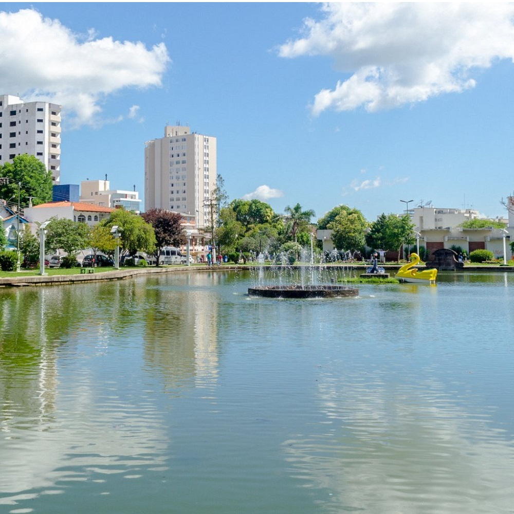
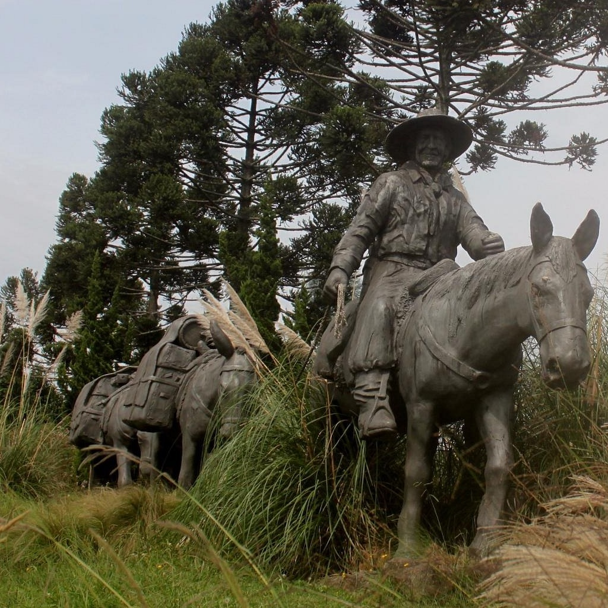

SALTO CAVEIRAS
Com uma linda cachoeira, possui ótimos locais para acampar, pescar e descansar. Além disso, a região há muitas propriedades que atendem os turistas, assim como uma população amigável e disposta a servir aos turistas, mostrando os melhores pontos e locais para o aproveitamento do local.
|

MORRO DA CRUZ
Palco de lindas encenações na Semana Santa. Um dos pontos mais altos da cidade. Mirante observatório de Lages. piquenique no alto do morro. ESCADARIA FREI SILVÉRIO, um nome dado em homenagem ao estimado franciscano Frei Silvério, construída no ano 2000, possui 500 degraus em homenagem aos quinhentos anos do descobrimento do Brasil.
|

CATEDRAL
A Catedral Diocesana, foi fundada em 1767, um ano após a fundação do povoado, hoje cidade de Lages. Em 1768, ela foi elevada à paróquia, sob o patrocínio de Nossa Senhora dos Prazeres e confiada aos padres diocesanos. Desde então, se mantém como ponto turístico principal da cidade de Lages.
|

TANQUE
Este é o local onde se originou a 'Lenda da Serpente do Tanque' e também foi homenageado com o Monumento às Lavadeiras. É uma área arborizada no centro da cidade. Local para caminhadas, lago com pedalinhos, quadra de esportes, parque infantil, academia de ginástica e biblioteca pública Crédito imagem: Adailton Camargo.
|
COLÉGIO ROSA
Centro Cultural SESC: o Grupo Escolar Vidal Ramos Jr., também conhecido como 'Colégio Rosa'. Atualmente está sendo restaurado para tornar-se um Centro Cultural. Anterior a este colégio, neste local existia uma capela a qual seu pároco era conhecido popularmente por Padre Antônio.
|

TROPEIRO
Os tropeiros conduziam o gado, do Rio Grande do Sul para Minas Gerais, São Paulo e Rio de Janeiro e, ao mesmo tempo, levavam consigo bens essenciais para o interior. A criação de gado no Rio Grande do Sul começara com o estabelecimento das missões jesuítas. Na época, Lages era um dos principais pontos de parada dos tropeiros, o que fez com que eles se tornassem símbolos da região Serrana.
|